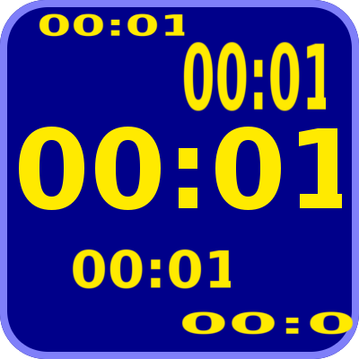
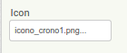
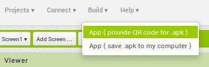

¡Stop! - Descárgate tus apps
Objetivos
- Aprender a descargar las apks de las aplicaciones que creamos en AppInventor.
- Poder instalar las apps en nuestro dispositivo como aplicaciones independientes que no dependen del emulador MIT AI2 Companion.
Podremos compartir nuestras aplicaciones con otras personas compartiendo la apk.
Actividad
Hasta ahora hemos probado nuestras aplicaciones en el emulador MIT AI2 Companion que tenemos instalado en nuestro dispositivo móvil. Pero, ¿y si hemos creado una aplicación que queremos usar sin necesidad de estar conectados al AppInventor?
Tenemos la posibilidad de descargar el archivo de la aplicación en formato apk (instalador de Android) e instalarla definitivamente en nuestro móvil. ¡Vamos a probarlo!
Entra en AppInventor y accede al proyecto "cuentaatras" que realizamos en la sección anterior (u otro que te guste más de los que hayas hecho).
Vamos a ponerle un icono a nuestra aplicación para que al instalarse en nuestro móvil podamos acceder al pulsar ese icono.
Para nuestro cronómetro puedes usar cualquiera de estas imágenes creadas con GIMP (o puedes crear tú una que te guste), están en formato PNG y con fondo transparente. Descárgate la que más te guste:
|  |
{kind=link}
{kind=link}
{kind=link}
En la vista "Designer", ve al componente "Screen1" y selecciona la propiedad "Icon". Ésta te permitirá subir el fichero de la imagen que hayas escogido y ponerlo como icono de la aplicación.

Ahora ve al menú "Build" y elige la opción "App (save .apk to my computer)":

Puedes probar la otra opción que te permite escanear un código QR e instalar la aplicación en tu móvil directamente. Pero nosotros vamos a seguir con esta opción para obtener el fichero apk y poder instalarlo donde queramos, pasárselo a nuestros amigos, etc.
Obtendremos un fichero como éste.
Ahora debes pasarlo a tu móvil (por ejemplo con el cable o con un e-mail, etc), y seleccionarlo para instalarlo.
NOTA: Debes tener activada en tu movil Android la opción "Fuentes desconocidas - Permitir la instalación de aplicaciones que no son de Market" que suele estar dentro del apartado de configuración de "Seguridad".
Y ya lo tenemos.
Obra publicada con Licencia Creative Commons Reconocimiento No comercial Compartir igual 3.0

Programando en AppInventor por Francisco Nevado Montero se distribuye bajo una Licencia Creative Commons Atribución-NoComercial-CompartirIgual 4.0 Internacional.